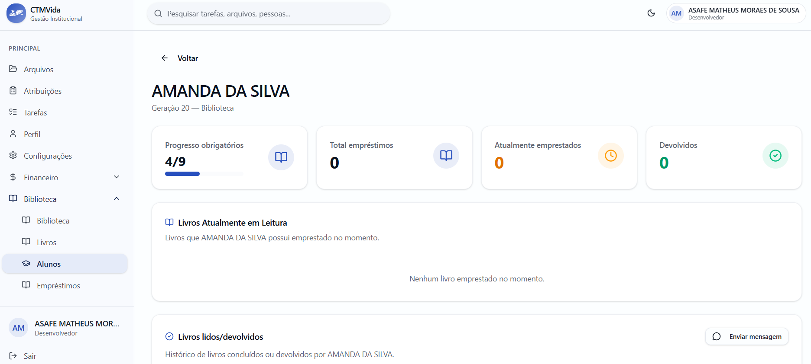
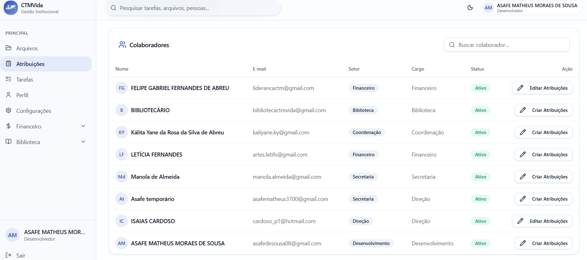
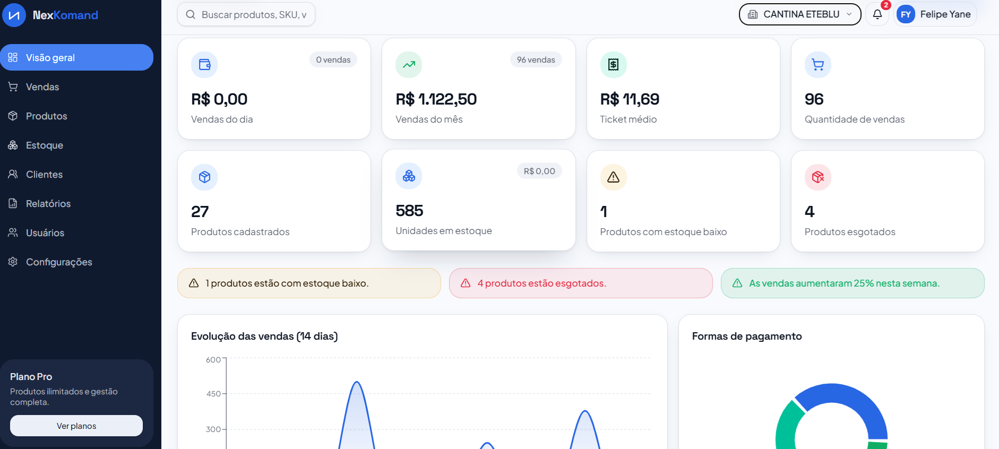

Transformando a Gestão do CTMVida através da Tecnologia
Durante os últimos 30 dias, foi desenvolvida uma série de atualizações no sistema administrativo do CTMVida, contemplando principalmente os setores Financeiro, Coordenação, Direção e Secretaria.

Principais Entregas Realizadas
Um panorama do que já foi construído até o momento.
-
Alunos (Financeiro)
Uma área dedicada à gestão das mensalidades e demais pendências financeiras dos alunos, permitindo o controle de todos os valores em aberto, incluindo mensalidades, cantina, livros, camisetas e outros itens.

-
Fluxo de Caixa (Financeiro)
Nesta aba, os setores Financeiro, Direção e Reitoria poderão registrar, acompanhar e visualizar, de forma ampla, organizada e sistemática, todas as entradas e saídas financeiras da instituição, proporcionando maior controle e transparência sobre a movimentação de recursos.

-
Aluguel (Secreataria e Financeiro)
Nesta área, poderão ser registrados, organizados e acompanhados todos os contratos de aluguel das dependências negociáveis do CTM (Koinonia), permitindo um controle mais eficiente dos espaços, períodos de locação, valores e demais informações relacionadas aos contratos.

-
Biblioteca (Coordenação)
Além disso, foi desenvolvido um sistema de gestão da biblioteca integrado ao sistema administrativo. Nessa área, é possível cadastrar e gerenciar o acervo de livros, os alunos e os empréstimos realizados. Dessa forma, a Coordenação passa a contar com um controle mais intuitivo, organizado e objetivo do setor, enquanto o histórico de leitura da turma pode ser acompanhado de maneira mais clara e eficiente.

-
Atribuições (Direção)
Na área de Atribuições, o Diretor poderá descrever as responsabilidades gerais de cada setor e colaborador. Dessa forma, essas atribuições ficarão registradas e poderão ser consultadas de maneira rápida e organizada sempre que necessário, facilitando a compreensão das responsabilidades e o acompanhamento das funções de cada membro da instituição.

-
Cantinas e Eventos (NexKomand)
A NexKomand é uma empresa em fase de idealização, responsável pelo desenvolvimento e fornecimento de um sistema de gestão para as cantinas, loja (store) e eventos do CTM. A plataforma integra recursos de PDV (Ponto de Venda) e ERP (Sistema de Gestão Empresarial), proporcionando maior organização, controle e eficiência na administração dessas operações.

Prints do Sistema
Visão geral das telas já desenvolvidas.


Demonstração do Sistema
Assista a uma visão geral em movimento da plataforma.
Próximas Etapas
O que já foi entregue e o que está por vir.